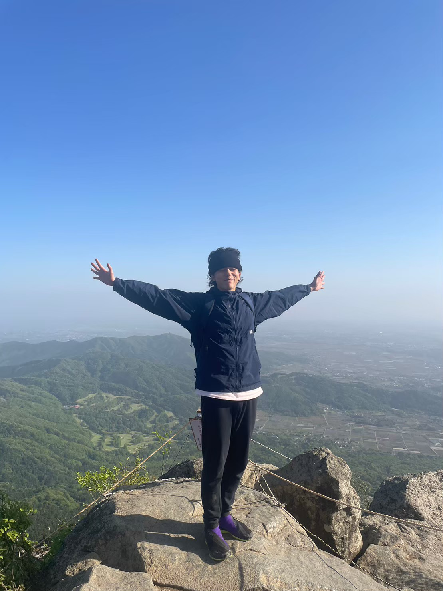

Hidetaka Kuniyoshi's homepage

Hidetaka Kuniyoshi from Okinawa, Japan
Affiliation：Northumbria University・Solar and Space Plasma Physics Group
Status：JSPS (Japan Society for the Promotion of Science) Overseas Research Fellow
Interests：Astronomy, Astrophysics（especially Solar/Stellar Physics）
★★★ NEWS ★★★
25/06/2025 I gave an invited oral talk at the Hinode18-IRIS16 meeting at University College London.
03/06/2025 I gave an invited oral talk at the SPINS (Solar Physics International Network for Swirls) meeting at Sheffield University.
09/05/2025 I gave an invited oral talk at the Yamada Lab seminar, High Energy Astrophysics Group, Waseda University.
05/05/2025 I gave an invited oral talk at the solar orbiter atmospheric heating working group seminar.
14-16/04/2025 I attended the 3-Day UK Solar Community Meeting at Sheffield University.
01/04/2025 Excited to start day one as a postdoc at Northumbria University!
26/03/2025 I was interviewed by my local newspaper, Okinawa Times (in Japanese) about my PhD project.
24/03/2025 I received my PhD from the University of Tokyo (photo).
{kind=link}
18/03/2025 My supervisor, Prof. Takaaki Yokoyama, gave an oral talk on my PhD project at the Astronomical Society of Japan (ASJ) spring annual meeting
14/03/2025 I gave an oral talk at the Research Institute for Sustainable Humanosphere A-KDK supercomputer symposium
10/03/2025 I received the University of Tokyo School of Science Research Award.
17/02/2025 I gave an invited oral talk at the JSPC (Japan Solar Physics Community) symposium.
14/02/2025 I gave an oral talk at the Cool Stars Workshop in Japan.
28/02/2025 I created my own website.